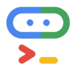
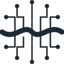

Rules, skills and config tools for coding agents
Tools that give coding agents shared rules, skills and settings, so Claude Code, Cursor, Codex and others follow the same conventions in every repo. Of the 556 tools on our writing code page, 36 fit this narrower job. By pricing: 31 open source, 5 free or freemium. The most-starred open repos here are ECC (293,059 stars), CC Switch (150,320 stars), UI UX Pro Max (147,219 stars). Most come from the coding (16), agent infra (3), games (3) categories.
Updated
ECC
The agent harness performance optimization system. Skills, instincts, memory, security, and research-first development for Claude Code, Codex, Opencode, Cursor and beyond
Added
CC Switch
Desktop manager for Claude Code, Codex, Gemini CLI, OpenCode, OpenClaw and other coding agents that switches API providers in one click and manages MCP servers, skills and prompts.
Added
UI UX Pro Max
UI UX Pro Max is an open-source agent skill that gives coding agents design intelligence for web and mobile UI, with a design-system generator that reasons over your product type and outputs matching styles, colour palettes, font pairings, layout patterns and UX rules for many frameworks.
Added
Pi
Minimal, extensible open-source terminal coding agent and agent toolkit from Earendil, with a multi-provider LLM API, TypeScript SDK, RPC mode and installable extensions, skills and themes.
Added
Agent Skills (Addy Osmani)
Agent Skills by Addy Osmani packages senior-engineer workflows and quality gates as skills for AI coding agents, with nine slash commands such as /spec, /plan, /build, /test, /review and /ship that walk an agent from idea to production with tests and review at each step.
Added
Taste Skill
Taste Skill is an MIT Agent Skill that pushes coding agents to build polished company websites instead of generic landing pages, enforcing one design system, plain copy, real photos and brand icons, restrained motion, and a browser-based checker and finish gate that verify the rules before a page is done.
Added
HyperFrames
HeyGen's open-source framework that renders HTML, CSS and animations into deterministic MP4 videos, usable from a CLI or by coding agents through skills.
Added
LibreChat
Self-hosted, multi-user AI chat platform with agents, MCP, skills, code interpreter and support for OpenAI, Anthropic, Gemini, AWS, Azure and many more providers.
Added
skills.sh
Vercel Labs' open-source CLI (npx skills) and directory for finding, installing and sharing agent skills across Claude Code, Codex, Cursor, OpenCode and 75+ other coding agents.
Added
Claude Code Templates
Claude Code Templates is an open catalog and CLI of more than 1,980 Claude Code components (skills, subagents, slash commands, hooks, MCP servers and settings) at aitmpl.com, where you preview each file and combine components into one npx install that merges with your existing configuration.
Added
Skill Seekers
Skill Seekers helps you discover and install agent skills for coding assistants, turning skill packs into something you can search and apply in Claude Code, Cursor and similar tools.
Added
Universal Modder
Skills, tools and a shared knowledge base that let Claude Code and other coding agents mod PC games you own, from engine recon to in-game testing.
Added
Oh Story
Oh Story is a set of MIT-licensed skills that turn Claude Code or Codex into a web-fiction workflow for research, chapter drafting, de-AI editing and covers.
Added
Gentle AI
Configures the coding agents you already use with shared rules, skills and settings.
Added
Anti Slop
Rules for an AI coding agent to filter out generic AI-generated UI designs, text, and code
Added
Refly
Refly is an open-source platform for building stable, versioned agent skills through a visual "vibe workflow": it compiles your team's SOPs into executable skills you can run in Refly, export to Claude Code or deploy as APIs and webhooks, with a community skill registry; self-host or use the cloud.
Added
Voyager
Research agent that explores Minecraft on its own, writing and reusing code skills to learn as it goes.
Added

Agents CLI
Google's CLI and skills that teach coding assistants to build, evaluate and deploy agents on Google Cloud and the Gemini platform.
Added
Observal
Self-hosted registry and insight engine for sharing coding-agent skills, MCP servers and agents across a team.
Added
OpenScience
Research agent workbench that reads the literature, writes and runs code and experiments and logs every step, with skills and connectors for databases like PubMed, UniProt and arXiv.
Added
Paper2Agent
Multi-agent system that turns a research paper and its code into a working MCP server and agent skills you can query and run.
Added
shadcn/lint
Linter for Tailwind design systems from shadcn that turns your design rules into checks coding agents can run and fix against.
Added
Ruler
Applies one set of rules to all your coding agents.
Added
MEX
MEX gives engineers and their coding agents shared project memory stored as Markdown in a .mex folder that travels with Git, with a local hub for people, CLI and skills for Claude Code and Codex, an MCP server and checked statechart explanations.
Added
Zero
An open-source terminal coding agent written in Go that works with 30+ model providers, supports MCP, skills and subagents, and keeps all sessions on your own disk.
Added
Beautiful Rust
Three Agent Skills plus a drop-in clippy config that teach coding agents to write, review and port idiomatic Rust. rust-best-practices loads whenever an agent writes Rust and steers it toward robust, maintainable code; rust-review produces a prioritised report where each finding cites the rule it breaks and shows the fix; rust-port moves C, C++, Python, Go or JavaScript to Rust by porting the original tests first so behaviour can be proven equal. Distilled from the Google Rust Style Guide, Rust API Guidelines, Effective Rust, Rust Design Patterns and Microsoft's Pragmatic Rust Guidelines; works with Claude Code, Codex, Copilot, Cursor and Gemini CLI. MIT.
Added
Oh My Agent
A specialist team for the coding agent you already use: 12 roles, 21 workflows and 33 skills that plan, build in parallel, review and debug, leaving plans, ADRs and results as files. Gates wait for your own tests.
Added
ScienceClaw
Verifiable program-level self-evolution for AI-for-Science agents: Skills and typed Operators grow from replay-verified executions
Added

Foreman
Foreman from ThruWire supervises coding agents with fast decision models. You give it a ticket, spec or bug report and it runs Codex, OpenCode, Hermes or LangChain's Deep Agents Code as workers, or attaches to supported sessions such as Pi, then independently judges whether the job meets the original requirements, whether the test evidence is enough and when verification or human input is needed. Extra checks can be configured for your workflow, and it is MIT licensed.
Added
Aura Autopilot
Open-source, continually learning playtesting agent from Ramen, the team behind the Aura game-dev assistant. Installed as a plugin in Unreal Engine 5, Unity 6 or Godot 4 on Windows and macOS, it reads your project's source, writes a bespoke harness for a real-time decision model, then plays the game with real keyboard and mouse input to explore levels, test features, verify fixes or pursue goals such as 'kill 10 enemies', and files a report with what broke. Per-game memory makes it faster each run; works with an Aura plan, BYOK keys, or Claude Code and Codex via its skills and MCP server. Apache-2.0.
Added
Telekinesis Agentic Skill Library
Python library of 250+ perception, vision and robotics skills plus a Physical AI agent that turns natural-language prompts into reviewable robot code.
Added
Ultralytics Agents
Visual canvas in Ultralytics Platform that chains YOLO models, vision-language models, conditions and actions like Slack alerts, plus official agent skills that let coding agents train, tune and export YOLO models.
Added
LaunchDarkly MCP
LaunchDarkly's official MCP server, so agents can create, update and clean up feature flags, AI configs and targeting rules from the IDE or chat.
Added
BetterClaw
Build and deploy AI agents without code on 28+ model providers or local LLMs, with 120+ app connectors, any MCP server and unlimited skills, running in Telegram, Slack, Discord and Gmail.
Added
Fileaify
Fileaify is a project workspace that plugs into the coding agent you already use, such as Claude Code, Codex, Cursor or Windsurf. You give the agent one URL (fileaify.com/agent) or the hosted MCP connector, approve its access, and it finds the project's documentation, architecture decisions, roadmap and known issues in each new conversation, so you don't have to explain the project again, even when you switch agents. Credentials stay in a vault: the agent can run approved actions with them without ever seeing the keys, sensitive actions need a human's approval, and paid tiers add a sandboxed executor where the agent can actually run work. The agent also writes its contributions back into the project docs, following your review rules. A live demo project lets you try it without installing anything.
Added
HTML Anything
An agentic HTML editor from the Open Design team. Your local coding-agent CLI (Claude Code, Cursor, Codex, Gemini and others) writes HTML decks, posters, reports and prototypes from 75 skills, shows them in a sandboxed preview, and exports in one click. No API key is needed.
Added
GitHub repos (33)
| Repo | GitHub stars | Licence | Last push |
|---|---|---|---|
| 293,059 | MIT | 2026-10-30 | |
| 150,320 | MIT | 2026-10-30 | |
| 147,219 | MIT | — | |
| 118,955 | MIT | 2026-10-30 | |
| 114,397 | MIT | — | |
| 112,355 | MIT | — | |
| 75,783 | Apache License 2.0 | 2026-10-30 | |
| 46,482 | MIT | 2026-10-26 | |
| 37,211 | MIT | 2026-10-29 | |
| 33,232 | MIT | — | |
| Skill Seekers ↗ | 15,286 | — | — |
| 9,220 | — | 2026-10-30 | |
| Oh Story ↗ | 8,357 | — | — |
| Gentle AI ↗ | 8,141 | MIT | 2026-10-30 |
| 7,601 | — | 2026-10-28 |
Top 15 of 33 by stars. Stars and licence come from each repo, checked when the listing was last verified.
FAQ
What are the best AI tools for writing code focused on rules, skills and config?
We list 36. The first three by GitHub stars and featured status are ECC: The agent harness performance optimization system. Skills, instincts, memory, security, and research-first development for Claude Code, Codex, Opencode, Cursor and beyond; CC Switch: Desktop manager for Claude Code, Codex, Gemini CLI, OpenCode, OpenClaw and other coding agents that switches API providers in one click and manages MCP servers, skills and prompts.; UI UX Pro Max: UI UX Pro Max is an open-source agent skill that gives coding agents design intelligence for web and mobile UI, with a design-system generator that reasons over your product type and outputs matching styles, colour palettes, font pairings, layout patterns and UX rules for many frameworks.
Are there free or open-source options?
Yes: 31 open source, 5 free or freemium. Pricing is as each maker states it.
More from writing code
Tools are grouped by what each says it does. Missing one? Submit it free.